splitArea operation
axis selector
| x, y, z | Scope axis to split along. |
adjustMode selector
| adjust | Default. Adjusts each resulting scope to the geometry's bounding box. |
| noAdjust | The scopes of the resulting shapes fill the parent scope without gaps. |
area float Split area. The current shape is split such that the resulting shape has the specified area. Depending on the prefix, area is interpreted in the following way:
| no prefix (absolute) | The new shape's area will be exactly area. |
| ' (relative) | The new shape's area will be area * current geometry's area. |
| ~ (floating) | With the ~ prefix, the remaining spaces between the split parts with absolute dimensions are automatically adapted. If multiple floating parts are defined within a split, the dimensions are weighed proportionally. |
operations A sequence of shape operations to execute on the newly created shape.
* Repeat switch: the repeat switch triggers the repetition of the defined split into the current shape's scope, as many times as possible. The number of repetitions and floating dimensions are adapted to the best solution (best number of repetitions and least stretching).
The splitArea operation subdivides the geometry of the current shape along the specified scope axis into a set of shapes with geometric areas specified by the area parameter. This operation works on planar 2D geometry and almost planar geometry. The area accuracy breaks down with nonplanar geometry. This operation does not apply to 3D geometry such as meshes or highly nonplanar geometry.
For each specified area, the current shape's geometry is cut with planes perpendicular to the split axis such that the resulting shape contains geometry with the specified area.
The optional repeat switch * can be used to repeat the content within a {...}* block as many times as it fully fits into the scope's dimension along the selected axis.
Related
Examples
Colors
These are the rules for the colors used in the following examples.
Red --> color(1, 0, 0) // red
print("area(R) = " + geometry.area)
Yellow --> color(1, 1, 0) // yellow
print("area(Y) = " + geometry.area)
Green --> color(0, 1, 0) // green
print("area(G) = " + geometry.area)
Cyan --> color(0, 1, 1) // cyan
print("area(C) = " + geometry.area)
Blue --> color(0, 0, 1) // blue
print("area(B) = " + geometry.area)
Magenta --> color(1, 0, 1) // magenta
print("area(M) = " + geometry.area)
Pink --> // semi-transparent pink
color(1, 0.5, 0.5, 0.3)
Relative Split
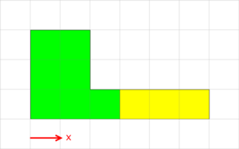
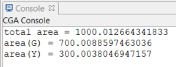
Lot -->
print("total area = " + geometry.area)
splitArea(x) { '0.7 : Green
| '0.3 : Yellow }
This shape is split into two parts. The first part is 70% of the original area, and the second part is 30% of the original area. Note that the specified area amounts do not need to sum to 1. For sums less than 1, the rest of the shape is discarded, and split sections greater than 1 are ignored.
Repeating Split
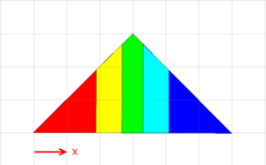
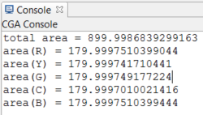
Lot -->
print("total area = " + geometry.area)
splitArea(x) { '0.2 : ColorMe }*
ColorMe -->
case split.index == 0 :
Red
case split.index == 1 :
Yellow
case split.index == 2 :
Green
case split.index == 3 :
Cyan
else :
Blue
This split divides the shape into five equal area parts using a repeat split. It repeatedly splits the shape into parts with area equal to 20% of the original area. Note that if area were set to '0.3, we would get four parts with areas equal to 30%, 30%, 30%, and 10% of the original area.
Split with Mixture of Floating and Absolute Areas
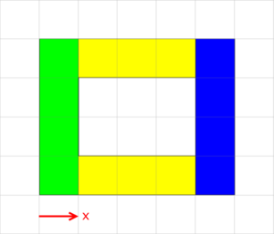
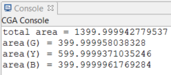
Lot -->
print("total area = " + geometry.area)
splitArea(x) { ~1 : Green
| 600 : Yellow
| ~1 : Blue }
This split divides the shape into a middle part (yellow) that has an absolute area of 600 and two side parts each with the same area. The yellow part consists of two pieces since there is a hole in the original shape, and the split cuts the shape along the hole boundary.
Nested Split
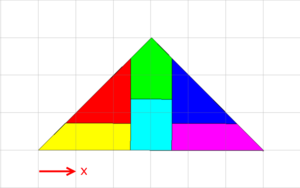
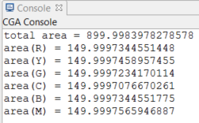
Lot -->
print("total area = " + geometry.area)
splitArea(x) { ~1 : splitArea(z) { '0.5 : Red
| '0.5 : Yellow }
| ~1 : splitArea(z) { '0.5 : Green
| '0.5 : Cyan }
| ~1 : splitArea(z) { '0.5 : Blue
| '0.5 : Magenta }
}
This nested split divides the shape first in x to get three equal area parts. Then, each part is divided in z into two equal parts. This yields six equal area parts.
adjust vs. noAdjust
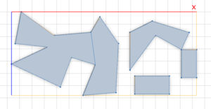
This is the original shape and its scope.
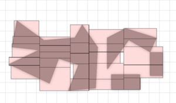
SplitAdjust -->
splitArea(x) { '0.2 : splitArea(z) { '0.2 : SplitLeaf }* }*
SplitLeaf-->
color(0.5, 0.5, 0.5)
Geometry.
primitiveQuad
t(0, 0.02, 0)
Pink
comp(e) { all : color(0, 0, 0) Edge. }
Without specifying a value for adjustSelector, the default behavior is to adjust the scope size to the geometry of each split part. Each pink box shows the scope of each split part. The scope maintains the original scope's orientation but shrinks to the bounding box of the geometry.
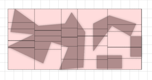
SplitNoAdjust -->
splitArea(x, noAdjust) { '0.2 :
splitArea(z, noAdjust) { '0.2 : SplitLeaf }*
}*
With noAdjust, the union of the scopes of each split part make up the original scope. The scopes are not adjusted to the geometry inside.
Divide a Block into Equal Parts
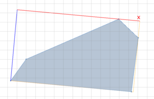
This is the original shape and its scope. Here is an example of how the splitArea operation can be used to divide a street block into lots with equal areas.
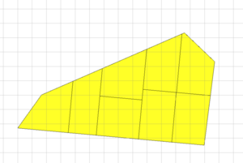
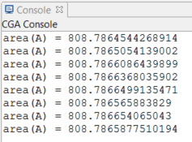
Lot -->
SplitArea(3)
SplitArea(n) -->
case n == 0 :
A
case scope.sz > scope.sx :
splitArea(z) { ~1 : SplitArea(n-1)
| ~1 : SplitArea(n-1) }
else :
splitArea(x) { ~1 : SplitArea(n-1)
| ~1 : SplitArea(n-1) }
A -->
color(getColor)
print("area(A) = " + geometry.area)
// color by area (so that lots with same area get same color)
const minArea = 243
const maxArea = 1255
alpha = (geometry.area - minArea)/(maxArea - minArea)
getColor = colorRamp("spectrum", alpha)
The block is divided recursively three times using splitArea. Each split divides the shape perpendicular to its longest axis into two parts of equal area. Each lot is colored by its area such that lots with the same area have the same color. Using splitArea, all the lots are yellow because the block is divided into equal area lots.
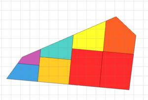
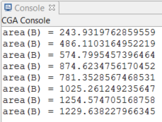
Lot2 -->
Split(3)
Split(n) -->
case n == 0 :
B
case scope.sz > scope.sx :
split(z) { ~1 : Split(n-1)
| ~1 : Split(n-1) }
else :
split(x) { ~1 : Split(n-1)
| ~1 : Split(n-1) }
B -->
color(getColor)
print("area(B) = " + geometry.area)
In comparison, when using the split operation, the lots are different colors because the block is divided into lots with different areas.